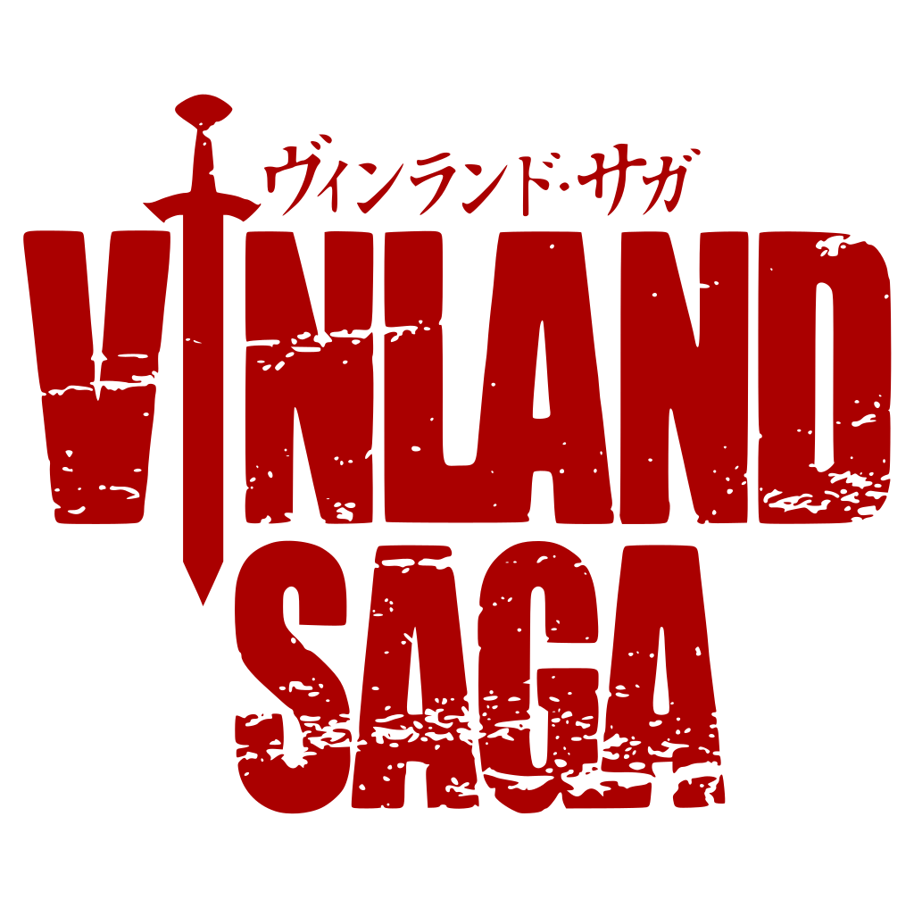

Mêlant personnages et évènements historiques avec de nombreux éléments fictifs, Vinland Saga est le récit de la vie d'un jeune islandais, Thorfinn Thorsson. Ce fils d'un illustre guerrier repenti verra sa vie basculer lorsque son père est assassiné par des pirates menés par le rusé Askeladd. Animé par la vengeance, Thorfinn suivra puis intégrera cette bande, avec le désir affiché de tuer dans un duel loyal l'assassin de son père
Jeune guerrier froid, solitaire et rongé par le désir de vengeance, il est âgé de près de dix-sept ans dans le prologue de la série. Bien qu'il haïsse Askelaad pour avoir assassiné son père, il fait partie de sa troupe de guerriers, afin de pouvoir le tuer en combat singulier. Pour avoir le droit de l'affronter régulièrement en duel, il doit accomplir des missions particulièrement difficiles pour ce dernier. Néanmoins, lors de chaque combat, il en ressort vaincu par l'habileté et la ruse de son adversaire.s
logo
